Клінічний випадок · журнал «ДентАрт» 2024 №3
Аутотрансплантація зубів
AUTOTRANSPLANTATION OF TEETH
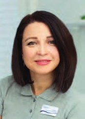
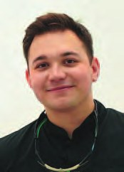
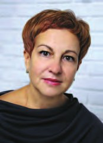
Методики імплантації швидко прогресують, і це має наслідком те, що сьогодні втрата зубів не є проблемою. Однак жодна із сучасних технологій в імплантології не здатна повноцінно замінити природний зуб. Отже, збереження натурального зуба, навіть у випадках ендодонтичних і періодонтальних патологій, є більш бажаним порівняно з імплантацією.
Аутотрансплантація – це альтернативна методика заміщення зуба, в ході якої використовується власний видалений зуб пацієнта, що переміщується в іншу ділянку ротової порожнини. В Україні тільки починається використання цього методу, і чітких показань та протоколів немає. Аутотрансплантація найчастіше використовується для лікування травм, і здебільшого в дитячій стоматології. Але ми впевнені, що лікарі можуть використати цей метод для заміщення зубів, що не підлягають лікуванню – як альтернативу імплантації. Трансплантований зуб має беззаперечні переваги перед імплантатами, зокрема збереження періодонтальної зв'язки і, як наслідок, пропріоцептивної чутливості, збереження об'єму альвеолярної кістки та збереження розвитку зубощелепної системи. У деяких випадках можлива навіть регенерація пульпи і подальше формування кореня при трансплантації зуба з неповним розвитком кореня та життєздатною пульпою.
Найчастішими показаннями до аутотрансплантації є незворотно ушкоджені моляри і фронтальні зуби, відсутність фронтальних зубів через агенезію (адентію) або авульсію, ретеновані або ектоповані передні зуби, а також зуби, для яких неможливо виконати ортоекструзію. Аутотрансплантація в таких випадках є чудовою альтернативою. Зазвичай найчастіше трансплантують премоляри, ікла, різці та треті моляри.
Хоча аутотрансплантація має довгострокові успішні результати, пацієнти повинні бути поінформовані про можливі ускладнення, такі як запальна або замісна резорбція, некроз пульпи, порушення загоєння періодонтальної зв'язки або зменшення довжини кореня. Важливо зазначити, що аутотрансплантація протипоказана дітям і підліткам через продовження росту альвеолярного відростка.
На успішність аутотрансплантації впливає низка факторів, включаючи стадію розвитку кореня, морфологію зуба, обрану хірургічну процедуру, тривалість позаротових маніпуляцій, форму реципієнтної лунки, васкуляризацію реципієнтного ложа та життєздатність клітин періодонтальної зв'язки зуба.
На вірогідність успіху впливають такі фактори:
- стадія розвитку кореня;
- морфологія зуба;
- обрана хірургічна процедура;
- час позаротових маніпуляцій;
- форма лунки реципієнта;
- васкуляризація ложа реципієнта;
- життєздатність клітин періодонтальної зв'язки зуба.
Для успішної аутотрансплантації важливо забезпечити відповідну підготовку реципієнтної зони, яка повинна бути достатньо великою для прийняття трансплантованого зуба. Розмір пересаджуваного зуба не завжди має відповідати розмірам реципієнтної ділянки, і ми хочемо навести приклад трансформації третього моляра, що був штучно ротований через дефіцит місця. Якщо зуб був видалений нещодавно, зазвичай є достатньо кісткової тканини для підтримки трансплантата. У випадку, якщо видалення відбулося кілька місяців тому і кістка вже регенерувала, зону для пересадки формують за допомогою хірургічних борів. Лунка повинна бути трохи більшою, ніж лунка донора, а зуб слід встановлювати з мінімальним тиском, перевіряючи відповідність між зубом-донором і лункою.
Таким чином, підготовка реципієнтної зони є ключовим етапом, що впливає на успішність аутотрансплантації зубів. Слід ретельно оцінювати стан кісткової тканини і забезпечити відповідність розмірів лунки пересаджуваного зуба, щоб уникнути можливих ускладнень і підвищити шанси на успішну інтеграцію трансплантата.
Найважливішим аспектом для успішного приживання донорського зуба є тривалість маніпуляції. За нашими спостереженнями, час позаротового перебування зуба має становити не більше двох хвилин. Саме тому для проведення цієї маніпуляції ми рекомендуємо використання 3D моделі зуба, який пересаджуємо, щоб максимально знизити тривалість взаємодії з донорським зубом.
Після аутотрансплантації слід іммобілізувати донорський зуб і вивести пересаджений зуб з прикусу. Ми для цього використовували ортодонтичний ретейнер. Через максимум 14 днів потрібно провести ендодонтичне лікування трансплантованого зуба. Для розуміння, прижився зуб чи ні, рекомендуємо проводити рентгенівські дослідження та зондування періодонтальної зв'язки. У нашому клінічному випадку ми отримали прикріплення вже через півтора місяця після маніпуляції – 1,5 мм глибину зондування (нагадаємо, що перед лікуванням ми мали понад 10 мм зондування на зубі 46). Ми рекомендуємо після 3-місячного строку при успішному приживанні зуба виконати остаточне ортопедичне чи реставраційне відновлення.
Клінічний випадок
Хірургічний етап трансплантації спланований та реалізований лікарем-інтерном Владиславом Литвином. Ендодонтичне лікування та реставрація трансплантованого зуба – лікар Ксенія Лазарєва.
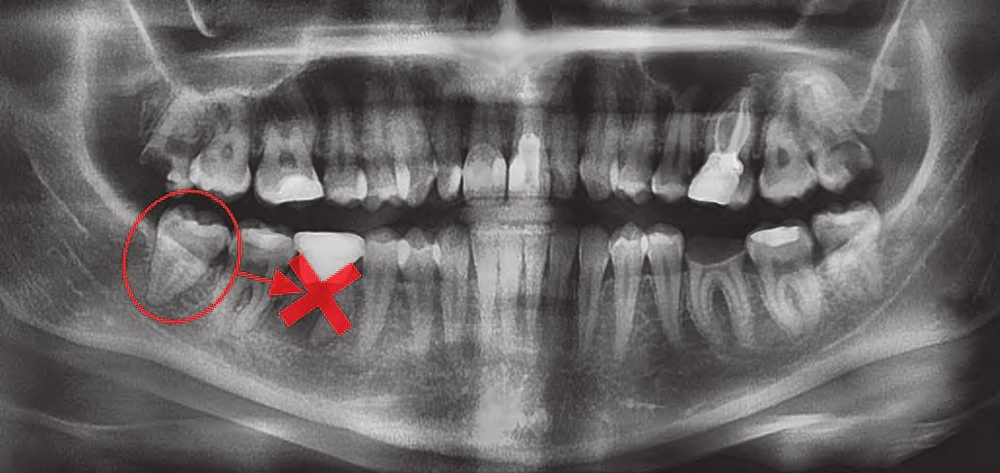
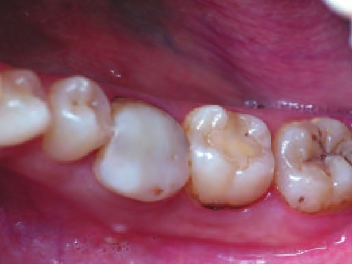
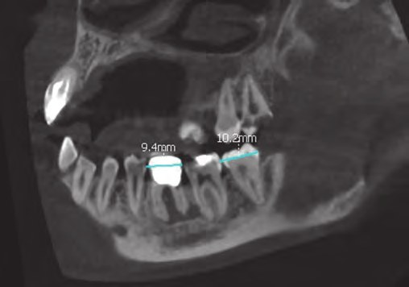
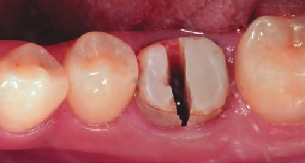
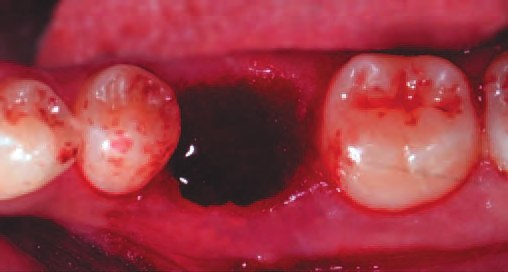
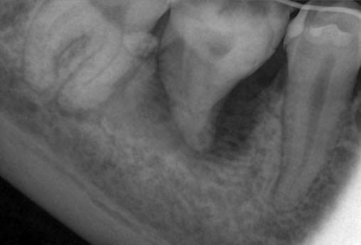
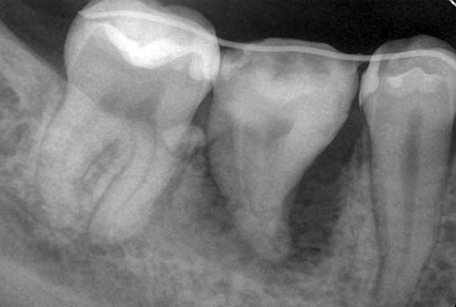
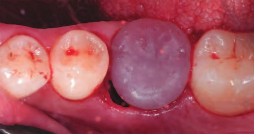
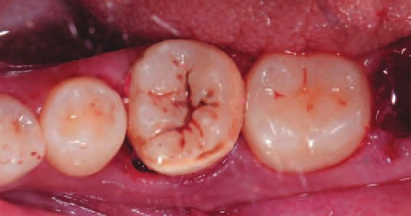
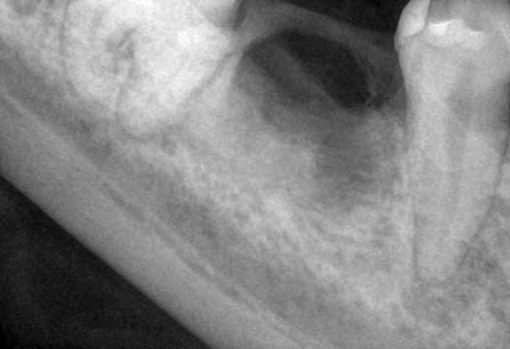
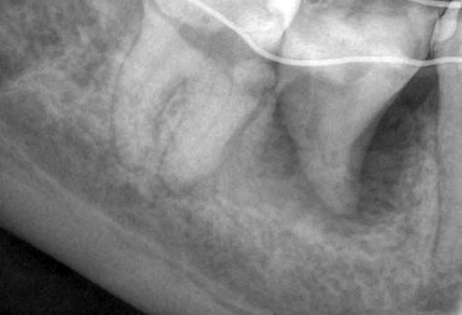
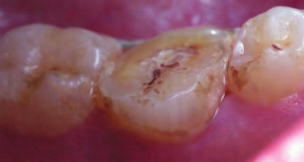
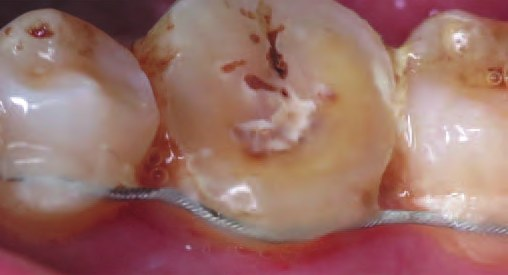
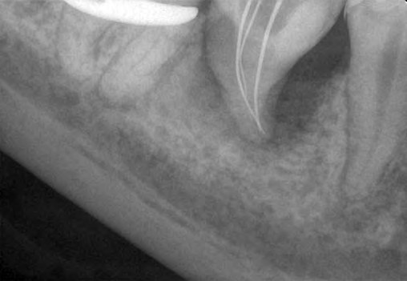
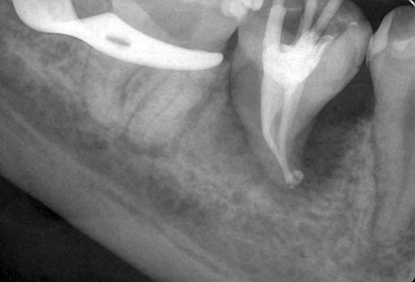
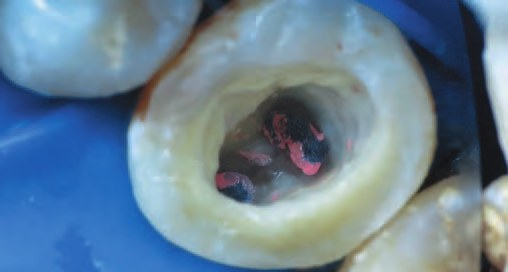
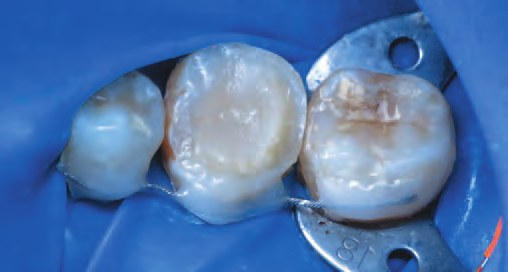
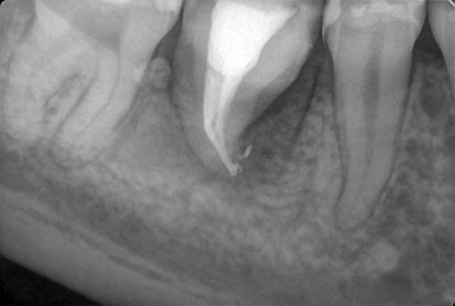
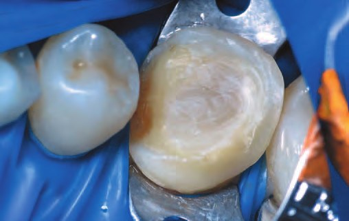
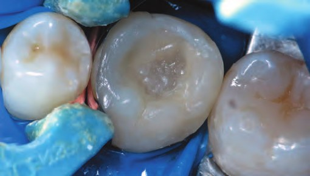
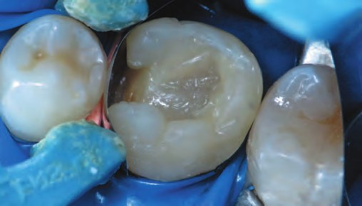
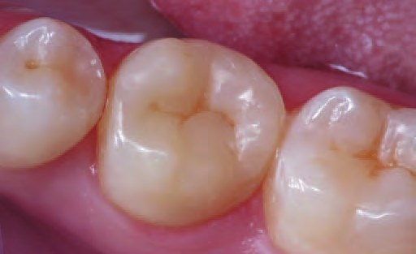
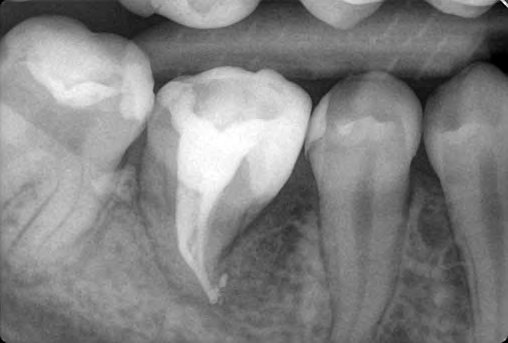
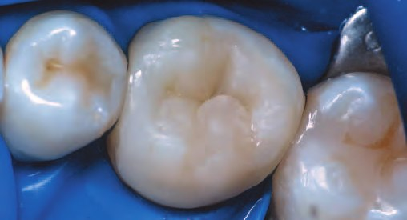
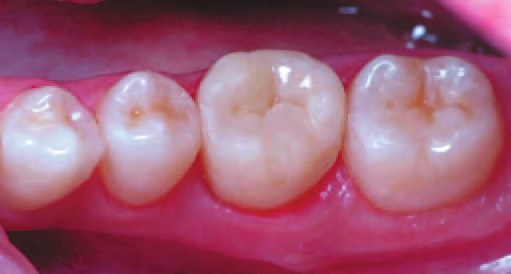
Висновки
Аутотрансплантація зубів є ефективним варіантом для заміщення втрачених зубів, проте потребує дуже точного хірургічного втручання. Ключовим фактором успішного результату є максимальне збереження періодонтальних зв'язок трансплантованого зуба. Важливою умовою також є стадія розвитку кореня: у випадках, коли корінь ще не повністю сформований, імовірність успішного загоєння пульпи становить 96 %. Якщо корінь сформований повністю, через два тижні після трансплантації потрібне ендодонтичне лікування.
Хоча аутотрансплантація не є поширеною практикою, дотримання належних протоколів дає змогу досягти довготривалих позитивних результатів.
Література
- Giannobile W. V., Lang N. P. Are dental implants a panacea or should we better strive to save teeth? J Dent Res. 2016;95(1):5–6.
- Albrektsson T., Donos N., & Working Group 1. Implant survival and complications. The Third EAO consensus conference 2012. Clin Oral Implants Res. 2012; 23 Suppl 6:63–65.
- Weijenberg R. A., Scherder E. J., Lobbezoo F. Mastication for the mind – the relationship between mastication and cognition in ageing and dementia. Neurosci Biobehav Rev. 2011; 35(3):483–97.
- Andreasen J. O., Paulsen H. U., Yu Z., Bayer T. A long-term study of 370 autotransplanted premolars. Part II. Tooth survival and pulp healing subsequent to transplantation. Eur J Orthod. 1990; 12(1):14–24.
- Tsukiboshi M. Autotransplantation of teeth: requirements for predictable success. Dent Traumatol. 2002; 18:157–80.
- Aarts B. E., Convens J., Bronkhorst E. M., Kuijpers-Jagtman A. M., Fudalej P. S. Cessation of facial growth in subjects with short, average, and long facial types – Implications for the timing of implant placement. J Craniomaxillofac Surg. 2015; 43(10):2106–11.
- Patel S., Fanshawe T., Bister D., Cobourne M. T. Survival and success of maxillary canine autotransplantation: A retrospective investigation. Eur. J. Orthod. 2011; 33:298–304.
- Pjetursson B. E., Karoussis I., Bürgin W., Brägger U., Lang N. P. Patients' satisfaction following implant therapy. A 10-year prospective cohort study. Clin Oral Implants Res. 2005; 16(2):185–193.
- Sugai T., Yoshizawa M., Kobayashi T., Ono K., Takagi R., Kitamura N., Okiji T., Saito C. Clinical study on prognostic factors for autotransplantation of teeth with complete root formation. Int. J. Oral Maxillofac. Surg. 2010; 39:1193–1203.
- Thilander B., Odman J., Lekholm U. Orthodontic aspects of the use of oral implants in adolescents: A 10-year follow-up study. Eur. J. Orthod. 2001; 23:715–731.
- Станислав Геранин/Stanislav Heranin. Аутотрансплантация зубов. Научно-обоснованный подход/Autotransplantation of teeth. Evidence-based approach. – ДентАрт. – 2022. – № 1. – С. 19–32.